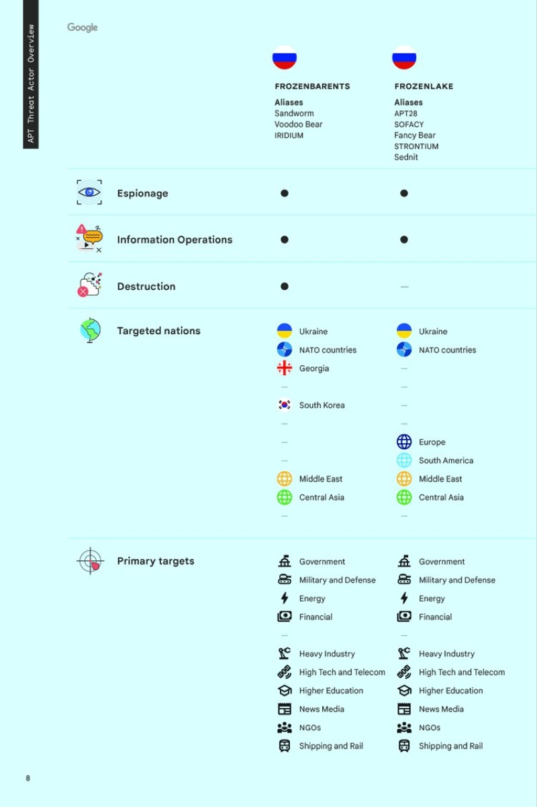

The closer you are to an idea, the harder it is to explain.
It’s called the curse of knowledge. Once you know something deeply, you can’t remember what it was like not to. So the explanation that feels obvious to you loses everyone else in the room.
What an expert can’t easily see
What still needs explaining
What can safely be left out
What order makes it make sense
Which words are jargon
Which detail actually matters
Where the explanation stops landing
Sound familiar?
- It takes twenty minutes to explain what should take two.
- Every slide is true, and no one remembers any of them.
- The room nods politely, then asks the question you answered on page one.
I connect the dots with you, then for them.
I don’t start with a brief and decorate it. I start with a conversation, and design is the last step, not the first.
Listen
You talk. I get everything that’s in your head out onto the table.
Ask
I ask the questions your audience would ask, even the “obvious” ones.
Edit
I find the story inside the information, then cut what doesn’t serve it.
Structure
I put the ideas in the order a newcomer needs to hear them.
Craft
Then I make it: the deck, report, map, film or site that carries it.
I become a temporary beginner on your behalf. I walk into your subject knowing little, and I use that on purpose.
For the first time in a while, you remember what it’s like to know nothing about your own subject. That’s when the clear version appears.
The shortest line between what you know and what they do.
The point lands in the first minute, not the fortieth.
Meetings spent debating the idea, not decoding it.
Leaders can say yes, or no, with confidence.
Important projects stop stalling at “we need to align.”
It’s not about making things look pretty. Once the thinking is clear, everything that comes after gets easier: every deck, launch and conversation built on it.
Dots I’ve connected.
Two decades of this work, most recently as a creative director inside Google’s privacy, safety and security organization. From Alphabet’s board and heads of state to first-time shoppers: different subjects, same problem. What the experts knew, and what everyone else needed to understand.
Secure AI Framework Risk Map
How AI systems can be attacked and defended, spread across security engineering teams.
One validated visual map, adopted as a foundational reference by CoSAI, a cross-industry coalition.

Security Analysis & Reporting
Dense threat intelligence on cyber conflict, AI defense and commercial surveillance.
A public report series with one editorial system, distributed at the Munich Security Conference.

Safer with Google Summit
Privacy, security, trust & safety, policy, legal and engineering, each with its own language.
One summit, one story: a system behind 80+ talks a year and six executive keynotes annually.

AI Safety Film
Technical research on AI security and the “defender’s dilemma.”
A public-facing film on ai.google and YouTube that anyone can follow.

Safety Anthem Film
Years of safety work the public rarely sees behind the word “safety.”
A flagship motion film that makes that leadership visible in minutes.

You probably need this when…
The people who understand the thing aren’t the people who decide about it, and the moment to close that gap is now.
You’re presenting to a board, a C-suite or a funding committee.
A launch needs executive buy-in before it can ship.
A regulator, policymaker or partner needs a clear explanation.
Your team needs to understand a change before it goes public.
You’ve explained it ten times and it still isn’t landing.
Who I work with
Engineering, security & privacy, legal, policy, product and marketing leaders
Who they need to reach
Boards, C-suites, regulators, heads of state, investors, and millions of first-time users
Where
Tech, finance, retail, healthcare and education. Startups to Alphabet.
The first dot is a conversation.
No brief, no pitch deck, no preparation. Tell me what you’re trying to explain and who needs to understand it.
Talk
A short call. You explain it the long way; I listen and ask questions.
Untangle
Together we find the story, the audience and what they need to hear first.
Make
I craft whatever carries it best: a deck, report, map, film, site or system.
Shaped to the problem
Some problems need a focused sprint, some a larger project, some an ongoing partner. After our first conversation I send a written proposal with scope, timeline and fee.
You work with me
The person on the first call is the person in the work, from the first question to the final file.
Alongside your team
I don’t replace your designers, writers or comms team. I help their work land with the people it’s meant for.
Discretion is standard
Board materials, pre-launch plans, security research. Much of my best work will never be public, and that’s how it should be.
or find me on LinkedIn
Based in San Francisco. Working with teams anywhere.